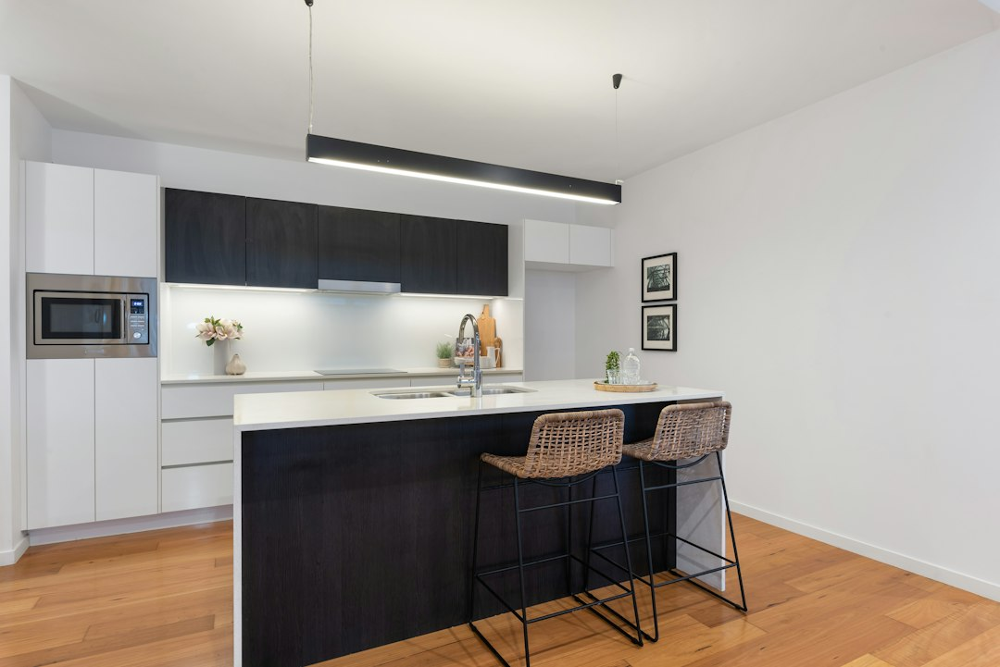

A Brisbane kitchen upgrade should be scoped around budget, licence checks, materials and disruption. The source page cites typical budgets from $15,000 to $60,000+, with makeovers taking 2 to 4 weeks, standard renovations 4 to 8 weeks, and custom projects 8 to 12 weeks. It also says Queensland building work over $3,300 requires a current QBCC licence, so quote comparison should include licence status, trade inclusions, warranty detail and cabinet hardware choices.
For homeowners comparing kitchen renovations brisbane options, the useful starting point is not style alone, but scope, licence status, storage, materials, timing and quote clarity.
Kitchen Renovations Brisbane Explained
Kitchen Renovation Brisbane presents kitchen work as a choice between simple makeovers, standard renovations and custom projects. That distinction is useful because the same room can mean very different work: fresh doors and benchtops, a full cabinet replacement, appliance integration, lighting changes, plumbing, electrical work, or a redesigned layout.
Before asking for quotes, describe the problem in plain language. Is the kitchen outdated, short on storage, awkward to move through, or affected by worn benchtops? The source page names all four as common reasons Brisbane homeowners start planning. A clearer problem statement helps a renovator price the job around function rather than just appearance.
- Makeover: usually suited to cosmetic improvement where the basic layout can stay.
- Standard renovation: more likely to involve cabinets, benchtops, splashbacks, lighting and appliance placement.
- Custom project: better suited when storage, pantry design, layout or finishes need detailed planning.
Quote Checks That Protect The Brief
The page says quotes are fixed price and should avoid hidden surprises. A useful quote still needs enough detail to compare like with like. Ask whether cabinetry, benchtops, splashbacks, appliance integration, lighting, licensed plumbing, licensed electrical work and waste removal are included or excluded.
Queensland licensing is a practical checkpoint. The source page states that building work over $3,300 requires a current QBCC licence, and that licensed plumbers and electricians are required by Queensland law. Treat that as a document check, not a marketing phrase. Ask for the licence details attached to the work being quoted, plus the workmanship warranty described in the offer.
A second useful reference point is the kitchen reno Brisbane planning guide, which keeps the same planning problem in view: define the job before comparing builders, materials or timelines.
Materials, Storage And Everyday Use
Cabinetry is the budget centrepiece on the source page, which says it can account for 25 to 40 percent of total cost. That makes drawer hardware, pantry access, corner storage and overhead storage more than minor details. If the room has a smaller footprint, the brief should prioritise centimetres that are currently hard to use.
The page names walk-in pantry designs, pull-out systems, corner carousel units and overhead storage as options. It also says Blum certified installers are used for soft-close drawers and hinges. A homeowner comparing quotes can ask which mechanisms are included, whether substitutions change the price, and how storage choices affect cabinet depth, access and usable bench space.
Benchtop selection also needs a current material conversation. The source page states that traditional engineered quartz is now banned due to silicosis concerns, and it names silica-free stone alternatives, laminate, porcelain and Caesarstone Mineral ranges as options. The safest way to use that information is to ask each quoting renovator exactly what product is proposed and whether the quote identifies the material by range.
Timing And Disruption Planning
The published timelines are practical but broad: 2 to 4 weeks for makeovers, 4 to 8 weeks for standard renovations, and 8 to 12 weeks for custom projects. Those ranges should be treated as planning bands, because the source page ties timing to scope rather than promising a single completion date.
A good pre-work discussion should cover the order of trades, access to the home, when appliances are disconnected, when plumbing and electrical work occur, and when benchtops can be measured or installed. The source page mentions a step-by-step process from initial consultation to completion, so homeowners should expect the renovator to explain sequencing before work begins.
Design consultation can reduce late changes. The page says free design consultation, 3D renders and detailed quotes are included. Use that stage to test whether the layout solves the original problem: storage, movement, worn surfaces or lack of function.
Who This Applies To
This guide is most relevant to Brisbane homeowners planning a kitchen makeover, standard renovation or custom kitchen where the provider's published scope fits the job. It suits owners who want cabinetry, benchtops, splashbacks, storage planning, appliance integration, lighting and design consultation considered together.
It is less useful for a reader who only needs a single appliance replaced, a repair outside a broader kitchen project, or a renovation brief that already has final drawings, trades and materials locked in. In those cases, the better task is checking whether a specific trade or supplier is needed, rather than starting with a full kitchen design conversation.
For resale-focused owners, the source page says the kitchen is ranked by real estate agents as the most important room for resale value, that 80 percent of buyers place it in their top three priorities, and that metro Brisbane kitchen renovations typically return 60 to 80 percent on investment. Those figures should guide budget discipline, not encourage overcapitalising.
- Define the problem. Write down whether the kitchen issue is storage, layout, worn benchtops, dated finishes or several of these together.
- Set the scope band. Decide whether the likely job is a makeover, standard renovation or custom project before comparing quotes.
- Check licence details. For Queensland work over $3,300, ask for the current QBCC licence details connected to the quoted work.
- Compare inclusions. Check cabinetry, benchtops, splashbacks, lighting, appliance integration, plumbing, electrical work, renders and warranty as separate quote items.
- Confirm timing. Use the published 2 to 12 week range by scope as a planning guide, then ask for the proposed sequence for your home.
| Project type | Best fit | Planning focus |
|---|---|---|
| Makeover | An outdated kitchen where the layout can mostly stay | Benchtops, doors, splashback, finishes and short disruption |
| Standard renovation | A room needing broader cabinet, storage, lighting or appliance work | Quote inclusions, licensed trades, sequencing and material choices |
| Custom project | A kitchen needing layout, pantry or detailed storage redesign | Design consultation, 3D renders, cabinet hardware and longer timing |
Common questions
How much should a Brisbane kitchen renovation budget allow? The source page cites $15,000 to $60,000+ depending on scope. It also breaks out budget renovations from $15,000 to $25,000, mid-range work from $30,000 to $60,000, and premium custom kitchens above $40,000 to $80,000+.
How long does the work usually take? The published guide gives 2 to 4 weeks for makeovers, 4 to 8 weeks for standard renovations, and 8 to 12 weeks for custom projects. The final timing depends on scope and sequencing.
What should be checked before accepting a quote? Check whether the quote includes cabinetry, benchtops, splashbacks, appliance integration, lighting and licensed plumbing or electrical work. Also confirm QBCC licence status where required, warranty detail and whether 3D renders are included.
Which materials deserve closer questions? Cabinetry and benchtops deserve close comparison because the source page says cabinetry is often 25 to 40 percent of the budget. It also identifies silica-free stone alternatives, laminate, porcelain and Caesarstone Mineral ranges as benchtop options.
This guide covers Brisbane kitchen planning, quote comparison, licence checks, materials, storage and timing for makeover, standard and custom projects.